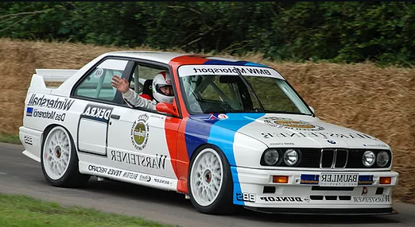
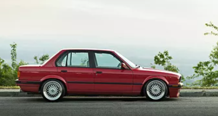
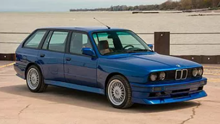
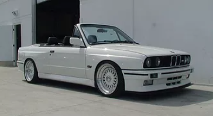

A Breif History

- During its 12 year production run over 2 million BMW E30's were produced worldwide.
- This included 4 body styles and 5 models for the USA. Ranging from the 318i four cylinder
to the 325ix 6 cylinder all wheel drive model.
- The E30 is most known for the E30 M3. This was the first official "M"car produced by BMW.
The M stands for Motorsport and the M3 had a four cylinder that produced 235hp.
- The M3 was very successful on the track against competitors such as Mercedes Benz. It went
on to win 10 championships in a span of 3 years.

DTM RACE M3
- The E30 M3 competed in many forms of motorsport and was highly successful in touring car racing.
- In full race trim, the 1988 M3's 2.3L naturally aspirated engine was rated at approximately 296 hp.
- The E30 M3 won the 24 Hours Nürburgring five times (1989, 1990, 1991, 1992 and 1994) and the
Spa 24 Hours four times (1987, 1988, 1990 and 1992), often competing against cars with significantly
larger or turbocharged engines.
BODY STYLES



E30 SEDAN
- Built from 1982 to 1991
- Available in the 318i, 325i & 325ix & manual or automatic transmissions
- Not as desirable by enthusiasts as the coupe model
E30 WAGON
- Built from 1987 to 1989
- Available in the 318i, 325i & 325ix & manual or automatic transmissions
- Highly desirable, only made in select European countries..
E30 CONVERTIBLE
- Built from 1988 to 1994
- Available in the 318i, 325i & 325ix & manual or automatic transmissions
- Less desirable than the coupe, but still loved by enthusiasts.